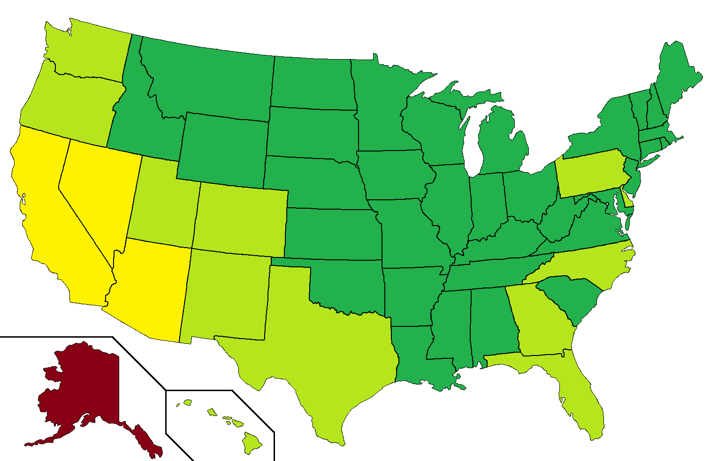

Again this year, I will be running a live model of the final outcome in each statewide race based on partial vote counts as they come in. I expect that the models will give us better insight on election night as to what the reporting results say about the final outcome than the raw vote counts can, and I'm publishing the model results both via the interactive web app below and on my Twitch stream.
What each model does is that it looks at the votes being reporting alongside the political geography in each state to provide its best estimate of the final outcome. The nature of this model is similar to the New York Times Election Needle. However, my approach is a bit different. Instead of having a single model with a confidence interval of the final outcome, I try the spaghetti model approach, similar to how a hurricane forecast works. Either four or six models will be running, each using separate assumptions and looking at the data in a different way, and one is not fundamentally more correct than another. I strongly caution against reading too much into what the models are guessing until different parts of the state are reporting. Each model has its strengths and weaknesses, but eventually, they should converge and stabilize as more votes come in. When there are sufficient samples across different political geographies of a state and the models converge, then we can become more confident of the final outcome.
Live forecasts of the 2022 final election outcome with commentary begins at 18:00 EST on November 5, 2024, on Twitch. Until then, enjoy the pre-election forecasts!
In the model, light represents 'likely', moderate represents 'safe', and dark represents 'called'. All times EST.
The election analysis uses the following terminology:
In terms of methodology, this model essentially guesses the final results of the election based on the geographic distribution of results that are reporting so far and the historical partisan lean of that region. Because it analyzes historical partisan lean, it only works on elections for which there are only two major candidates: one Democrat and one Republican. The model is fundamentally biased for historical results, so there's a reasonable margin of error of about a point or so. The margin of error is typically higher when:
An example of a substantially different turnout pattern that causes the model to be off is the Texas Senate election in 2018, when Beto O'Rourke's candidacy caused a surge in Democratic turnout, while Texas also reported a lot of early vote that favored O'Rourke.
This models are currently being run for statewide elections in all states with the exception of Alaska. The following map shows how accurately we anticipate the models to perform:

This year, I'm running four or six models, depending on the state:
These models all walk a balance between variance and bias, according to the bias-variance tradeoff that governs statistical modeling. These models are designed so that when one model suffers from high variance but has low bias, another suffers from high bias but has low variance, so looking at all of the models together will mitigate the problems present in one model alone. Type A, B, and C models are guaranteed to converge once all votes have been counted, but type 1 and 2 models are not. In fact, only type 2 models are guaranteed to converge to the final outcome. Additionally, type 2 models are seeded with an initial bias to stabilize the model during initial reports. That bias is devised from pre-election polls with an underestimate the expected winner, which means that most battleground races are seeded with a bias of 0.
What's new this year is the type C model, which attempts to account for the partisan differences between early voting and election day voting. This is meant to account for the recent increase in the use of early and mail-in voting, which are often counted separately from same day vote and tend to skew Democratic. For this, we adjust the priors based on polls that estimate the proportion of Democratic and Republican voters that will vote early versus day-of and estimates of how much of the vote that is being reported is early versus day-of. These disparities have caused inaccurate analytics in past elections, such as overestimating Biden's performance in Arizona and Ohio in 2020 and overestimating Trump's performance in Michigan, Pennsylvania, and Wisconsin in 2020, based on the first results reporting. However, this model depends on knowing which votes are which, and this information is not always accurately reported on election night.